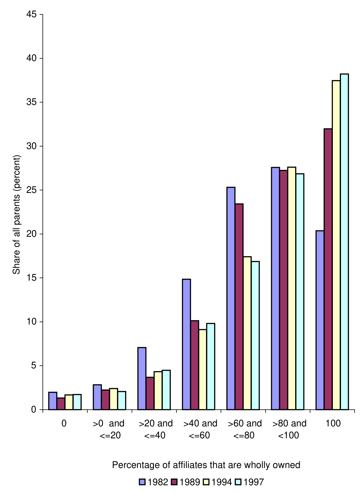
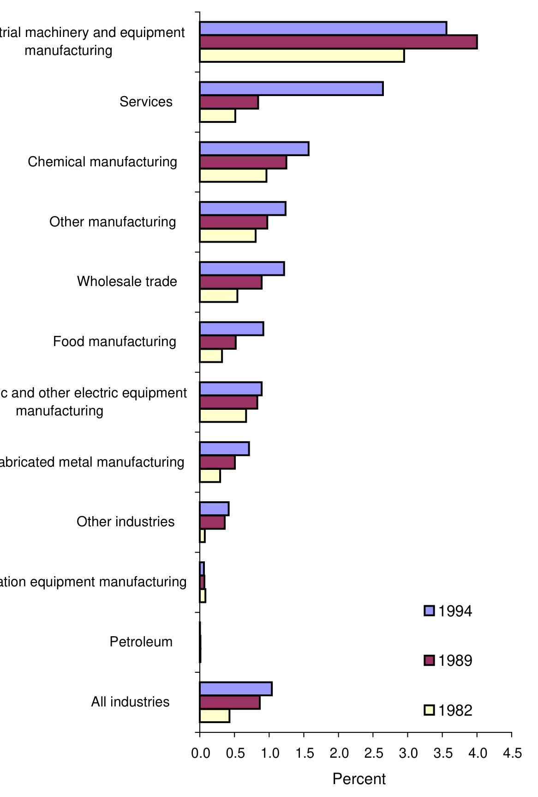
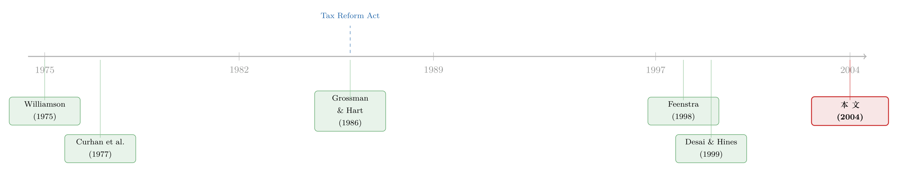

全球化越深，为什么美国公司越不爱「合资」？
本文读的是 Desai, Foley & Hines (2004, Journal of Financial Economics)：在 1982–1997 这二十年里，美国跨国公司把海外子公司越来越多地办成「全资」、越来越少地办成「合资」。作者用东道国放开外资持股限制、以及 1986 年美国税改对合资的惩罚作为工具，论证了一个反直觉的结论——全资与「公司内部贸易、技术转移、全球税务筹划」是互补品；正是全球一体化经营变得更重要，才让分享所有权的代价水涨船高。估算显示，合资衰落的 五分之一到五分之三 可归因于公司内部交易的兴起。
1 一句被数据打脸的「常识」
先讲一句几乎被奉为圭臬的话。1989 年，大前研一（Ohmae）在《哈佛商业评论》上写道：「全球化要求结盟，使结盟成为战略中绝对不可或缺的一环。」（"[g]lobalization mandates alliances, makes them absolutely essential to strategy."）翻译过来就是：世界越是连成一片，跨国公司就越需要找当地伙伴合资、结盟、共担风险。这听上去太顺理成章了——一个人闯荡陌生市场，当然不如带个本地向导。
可是，当三位作者把美国商务部经济分析局（Bureau of Economic Analysis, BEA）那份覆盖几乎所有美国海外子公司的普查数据摊开来看时，他们看到的却是一条完全相反的曲线：在全球化突飞猛进的二十年里，美国公司不是更爱合资了，而是越来越不爱了。
数字相当干脆。少数股权 (minority-owned) 子公司——也就是美国母公司持股在 10% 到 50% 之间的那些——占全部子公司的比例，从 1982 年的 17.9% 一路跌到 1997 年的 10.6%；而全资 (wholly owned，即 100% 持股) 子公司的比例，则从 72.3% 升到了 80.4%。到 1997 年，大约 80% 的海外子公司是全资的，多数股权和少数股权各占约 10%。
于是，一个自然的问题冒出来了：这到底是怎么回事？
2 三个看起来都对、其实都不够的解释
面对「合资衰落」，最容易想到的解释有三个，作者一个个把它们拦下来。
第一个解释：是不是合资本来就是「凑数」的小项目，做不大、活不长，自然就被淘汰了？ 不对。数据显示少数股权子公司一点都不小。1997 年，少数股权子公司的销售额中位数是 $46.7 百万美元，多数股权子公司是 $44.9 百万，全资子公司反而最低，只有 $41.1 百万。资产和雇员数也是同样的格局——合资子公司在体量上甚至略大于全资子公司。所以「合资是小打小闹」这个印象，站不住脚。
第二个解释：是不是东道国放松了管制，公司从「被迫合资」里解放了出来？ 这个解释有几分道理，但远不是全部。作者把各国按对「外资控股」的限制程度（用 Shatz (2000) 的评级）分成四档来看（如图 1）：管制最松的两档国家，在整个样本期里本来就几乎没什么限制，可即便在这两档里，分享所有权的比例照样在下降——到 1997 年只剩 14%。而美国跨国公司的活动绝大部分恰恰就集中在这两档最自由的国家。换句话说，就算没有任何「松绑」可言，合资也在退潮。管制放开能解释一部分，但解释不了主干。
第三个解释：是不是美国公司只是把投资搬去了更富的国家，而富国本来合资就少？ 也不是。按东道国人均收入分档（图 2），最富的那一档里，部分持股的子公司占比也从 1982 年的 24.4% 跌到了 1997 年的 15.5%。地理结构的变化同样解释不了这条下降曲线。
三个现成的解释都被拦下之后，真正的张力才显露出来：合资的衰落，似乎是一种主动选择——美国母公司越来越「想要全部的控制权」。可是，它们为什么突然这么想要控制权？
这就要把镜头从「子公司」拉到「母公司」身上。图 4 把那些拥有五家以上海外子公司的母公司，按「全资子公司占比」重新排了一次队。1997 年的图景是：约 38% 的母公司把旗下子公司全部办成了全资。而且随时间推移，大型跨国公司对全资的偏好变得越来越鲜明——这条分布在二十年里整体向「全资」那一端平移。

Figure 4: Share of parents with specified fractions of wholly owned affiliates. The sample is restricted to
3 真正的主角：全资是「一体化经营」的互补品
作者给出的核心答案，可以浓缩成一句话：全资之所以越来越值钱，是因为跨国公司越来越需要把全球业务整合成一张网，而合资伙伴恰恰是这张网上的摩擦点。
这背后有三条相互交织的成本线索。
其一，税务筹划。 跨国公司有一项别人没有的本事：通过调整公司内部的转移定价 (transfer pricing)，把利润从高税率的地方挪到低税率的地方，从而压低全球总税负。可一旦子公司是合资的，麻烦就来了——本地合伙人盯着的是这家子公司的本地利润，母公司盯着的是全球利润，两者的目标天然打架（Kant (1990) 早就指出了这一点）。你想把利润从这家合资公司「转」走，合伙人第一个不答应。
其二，技术转移。 把核心技术、专利、know-how 交给一家有外人参股的子公司，等于把它暴露在被「挪用」的风险之下。母公司因此会本能地收紧对合资公司的技术投放。这一点在数据里看得见：图 9 画的是子公司付给美国母公司的特许权使用费 (royalty) 占其销售额的比例——它衡量了技术转移的强度。全资子公司的这个比率明显更高，合资子公司则要低得多。

Figure 9: Ratio of royalty payments from affiliates to their U.S. parents to sales by those affiliates, by
其三，生产的分散化。 Feenstra (1998) 等人指出，全球市场一体化的同时，生产过程本身却在「碎片化」：一件成品的不同工序被拆到不同国家去做。这意味着同一家公司的各个子公司之间，要频繁地互相买卖半成品、协调产量和定价。可是每多一道「公司内部贸易」（intrafirm trade，即母子公司、子子公司之间的关联交易），就多一个和本地合伙人利益冲突的接口。
三条线索指向同一个机制：当税务筹划、技术转移、跨境分工这些「一体化经营」的好处越来越大，分享所有权的隐性代价也就越来越大。 全资和公司内部贸易，是一对互补品。
4 但真正关键的一步，在于「鸡生蛋」怎么破
讲到这里，故事其实还差最硬的一环。
横截面上，我们确实看到「全资子公司」往往伴随着「更密集的母子内部交易」。但这证明不了因果——因为所有权和经营方式是同时决定的：也许是某个我们没观测到的第三因素（比如行业属性、产品复杂度），既让公司选择全资，又让它选择高强度内部贸易。这就是典型的内生性 (endogeneity) 难题。
那怎么办？理想的做法，是找到「公司内部贸易成本」的外生变动，再去看它如何牵动所有权决策。可惜，给「协调成本」找一个干净的工具变量，几乎不可能。
于是作者绕了个非常漂亮的弯——他们反过来做。 他们去找「所有权」的外生变动，估计所有权对内部贸易的影响；然后借助生产者理论 (producer theory) 的对称性 (symmetry) 条件，把它翻译回「内部贸易对所有权」的影响。
这一步是全文识别策略的灵魂。它的逻辑可以写成这样一个对称关系：
它的直觉，和微观经济学里的斯勒茨基对称 (Slutsky symmetry)、本质上是同一回事：当一个利润最大化的主体同时选择两个变量时，由二阶交叉偏导相等（杨氏定理），「ω 对 T 的边际作用」必然等于「T 对 ω 的边际作用」。所以，只要我能干净地估出左边，就等于免费拿到了右边——而右边，正是作者真正想要、却苦于没有工具的那个量。
接下来就只剩一个任务：给「所有权」找两把外生的「撬棍」。
第一把撬棍：东道国放开外资持股限制。 有些国家在样本期内放松了对外资控股的管制。这对身处其中的子公司而言，是一次外生的「所有权松绑」。作者发现：那些所在国放开限制之后的子公司，随后与关联方之间的交易明显增加了。 也就是说，一旦能多持股，公司就立刻把更多业务搬到「公司内部」来做。（关于「资本管制放开如何重塑跨国公司决策」这条线，可参见《想拦住资本，又想招来外资——跨国公司如何把这道矛盾「钻」成了一笔账》。）
第二把撬棍：1986 年美国税改 (Tax Reform Act of 1986, TRA86)。 TRA86 引入了一套对合资（尤其是少数股权安排）不利的税收惩罚——Desai & Hines (1999) 已经指出，这套惩罚是 1986 年后少数股权使用骤减的部分原因。作者据此构造了「会被这套惩罚击中的公司」这一外生分组，发现：这些公司在税改之后，同样大幅增加了关联方交易。
两把撬棍指向同一个方向：外生地降低分享所有权的吸引力（或外生地放开全资的可能），公司就会顺势把更多交易拉进公司内部。借助对称性，这恰恰反过来说明——内部交易越重要，公司就越想要全资。 互补关系被坐实了。
5 一个反转：全球化「掐死」了合资，而非「催生」了它
把所有证据拼起来，作者给出了一个量化口径的结论：在过去二十年里，美国公司之所以越来越少用部分持股的方式组织海外经营，其中 五分之一到五分之三（one-fifth to three-fifths） 可以归因于公司内部交易（贸易、技术转移、税务筹划）日益重要这一件事。
于是大前研一那句「全球化要求结盟」被彻底翻转了过来：
全球化的力量，削弱而非加速了所有权的分享。市场越是连成一片、生产越是跨境分工，跨国公司就越需要对整张网络说一不二——而这恰恰是合资伙伴给不了的。那些仍在用合资的子公司，反倒是那些「最不一体化」的——它们主要在本地采购、面向本地销售，因而最不受这股潮流的影响。
这个反转，正是全文最有分量的贡献：它把一个被反复念叨的管理学「常识」，放到全美最全面的微观数据和一套讲究的识别策略下，得出了相反的、却更经得起推敲的答案。
6 文献脉络
这条研究脉络，是几股力量在 2004 年这篇论文里的一次汇流。
第一股，是企业边界理论。 从 Williamson (1975) 的交易成本，到 Klein, Crawford & Alchian (1978) 对「可专用性租金」的刻画，再到 Grossman & Hart (1986)、Hart & Moore (1990) 的产权理论 (property rights approach)——这一脉反复论证：当资产具有专用性、契约不完全时，共同所有权能缓解机会主义，而「联合所有权」往往是次优的，因为剩余控制权被分摊掉了。本文给这套抽象理论提供了一个罕见的大样本检验场。
第二股，是合资本身的实证文献。 早年的调查研究（如 Curhan, Davidson & Suri (1977)，Hladik (1985)）记录的是美国公司在 1951–1984 年间对国际合资的「热情高涨」，并预言它会继续增长。这与本文的发现正好相反——而把曲线掰回头的转折点，正是 Desai & Hines (1999) 注意到的：1986 年税改之后，少数股权的使用开始退潮。
第三股，是「生产碎片化」的国际贸易文献。 Feenstra (1998)、Feenstra & Hanson 等人指出，全球一体化伴随着生产工序的跨境拆分，公司内部贸易随之上升。本文把这股潮流接到「所有权选择」上：正是它，推高了分享所有权的代价。
本文站在这三股力量的交汇处：它用产权/交易成本理论作骨架，用 BEA 普查数据作血肉，用税改和管制松绑作识别撬棍，最终回答了「合资为何衰落」这个老问题。

（顺带一提，合资这种组织形式为何「先天不稳」，本博客另有一篇可作参照：《合资这场「联姻」，为什么从一开始就注定要散？》。）
7 评论与延伸（Q&A + 研究方向）
(a) 几个可能的疑问
Q：所谓「对称性」识别，真的可信吗？它会不会只是把内生性从一边搬到了另一边？
这是全文最该被追问的地方。对称性本身是producer theory的恒等式，没问题；真正的赌注押在两把工具上——东道国松绑与 TRA86——它们对「所有权」是否外生。TRA86 是全美统一的外生冲击，可信度较高；但「会被惩罚击中的公司」与「碰巧也在扩张内部贸易的公司」可能相关，排他性约束 (exclusion restriction) 并非无懈可击。作者的辩护是两把性质迥异的工具给出一致结论，这增强了说服力，但并不构成铁证。
Q：合资衰落，会不会只是「会计口径」变了——比如公司把原本的合资重组成了全资，账面上自然就少了？
论文用 Panel B 的进入/退出率回应了这一点：周转（entry/exit）很大，且明确偏向更高的所有权——全资子公司的进入率在两个时段都高于退出率，少数股权子公司则相反（1982–1989 年进入率
54.2%对退出率79.0%）。这说明衰落来自真实的新设与退出决策，而非纯粹的报表重分类。
Q：「五分之一到三分之五」这个区间是不是太宽了，等于什么都没说？
区间宽确实是弱点，反映了不同设定下弹性估计的不确定性。但即便取下限五分之一，它也传递了一个定性结论：内部交易的兴起是合资衰落的一个实质性驱动力，而非边角料。作者的野心是确立机制方向与量级，而非给出一个精确点估计。
Q：为什么作者不直接给「内部贸易成本」找工具，非要绕这个对称性的弯？
因为「协调成本/内部贸易成本」的外生变动几乎无法观测——你很难找到一个只影响内部贸易成本、却不直接影响所有权的变量。而「所有权」的外生冲击（管制、税法）反而是现成的。对称性把「能估的那一边」翻译成「想要的那一边」，是一种典型的「用理论换数据」。
Q：这和「全资子公司技术转移更多」的因果方向，会不会反了？是不是技术含量高的公司本就偏好全资？
横截面上确实分不清，这正是图 9 那种描述性证据的局限。论文的因果主张靠的是工具变量那一节——管制松绑后关联交易上升——而非图 9。图 9 只是把「互补」的横截面相关性摆出来，真正的识别在第 4 节。
Q：结论对今天还成立吗？数据停在 1997 年。
机制（税务筹划、技术保护、跨境分工推高全资需求）在逻辑上并未过时，且 2000 年后全球价值链进一步深化，方向上应当延续。但 BEPS 等国际税收协调、数字经济、以及部分国家近年重新收紧外资准入，可能改变这套激励的强弱——这恰恰是值得用新数据重做的地方。
(b) 几个可能的研究问题与提案
1. 把这套「所有权—内部贸易互补」逻辑搬到债务与信用市场。
【经济故事】全资让母公司能在内部自由调配现金流，这是否也改变了子公司的融资方式——比如更依赖母公司内部借款（intercompany debt）而非外部银行/债券？合资子公司因利益冲突，可能被迫更多地在本地外部市场融资。所有权结构或许是公司债发行选择背后一条被忽略的暗线。 【可行性】中。需把 BEA（或各国海关+企业层）数据与子公司层面的负债结构、关联方借款匹配；识别上可沿用本文的管制松绑/税改冲击。难点在于内部借款数据的可得性与跨境匹配。
2. 外资持有人结构与东道国债券市场流动性。
【经济故事】本文讲的是「美国母公司持有海外子公司多少股权」；可以反过来问：当外资以全资 vs. 合资形式进入一国，对当地（公司债/股权）二级市场的流动性、信息含量有何不同影响？全资意味着更少的本地公开交易主体，可能反而降低本地市场深度。 【可行性】中。需要东道国层面的持仓与交易微观数据（如新兴市场托管数据）；识别可借助外资准入放开的时点。诚实地说，把「所有权形式」与「流动性」干净地连起来需要较强的数据条件。
3. 国际税收协调（BEPS、全球最低税）如何反向冲击所有权选择。
【经济故事】如果本文成立的机制是「税务筹划推高全资需求」，那么当全球最低税（GloBE）削弱了转移定价的避税空间，全资相对合资的吸引力是否会被削弱，合资是否会「复兴」？这是对本文机制的一次反向、外生的检验。 【可行性】高。GloBE 在 2024 年前后分批落地，提供了清晰的事件时点与处理/对照（按子公司所在地有效税率、母公司避税敞口分组）。数据上可用各国企业注册+持股数据，doable。
4. 技术保护强度（专利执法）与全资偏好。
【经济故事】本文用「挪用恐惧」解释全资偏好。那么当一国突然加强（或削弱）知识产权执法，全资 vs. 合资的边际选择是否随之移动？这能把「技术转移」这条机制单独识别出来。 【可行性】中高。可用各国 IP 执法改革（如加入 TRIPS、专门法院设立）作为冲击，配合行业技术密集度做异质性分析。挑战在于把执法变化与其他同期改革分离。
参考文献
- Curhan, J. P., Davidson, W. H., & Suri, R. (1977). Tracing the Multinationals. Ballinger, Cambridge, MA.
- Desai, M. A., Foley, C. F., & Hines, J. R. (2004). The costs of shared ownership: Evidence from international joint ventures. Journal of Financial Economics 73(2), 323–374.
- Desai, M. A., & Hines, J. R. (1999). Basket cases: tax incentives and international joint venture participation by American multinational firms. Journal of Public Economics 71(3), 379–402.
- Feenstra, R. C. (1998). Integration of trade and disintegration of production in the global economy. Journal of Economic Perspectives 12(4), 31–50.
- Grossman, S. J., & Hart, O. D. (1986). The costs and benefits of ownership: a theory of vertical and lateral integration. Journal of Political Economy 94, 691–719.
- Hart, O., & Moore, J. (1990). Property rights and the nature of the firm. Journal of Political Economy 98(6), 1119–1158.
- Holmstrom, B. (1982). Moral hazard in teams. Bell Journal of Economics 13(2), 324–340.
- Kant, C. (1990). Multinational firms and government revenues. Journal of Public Economics 42(2), 135–147.
- Klein, B., Crawford, R., & Alchian, A. A. (1978). Vertical integration, appropriable rents, and the competitive contracting process. Journal of Law and Economics 21(2), 297–326.
- Ohmae, K. (1989). The global logic of strategic alliances. Harvard Business Review 67(2), 143–152.